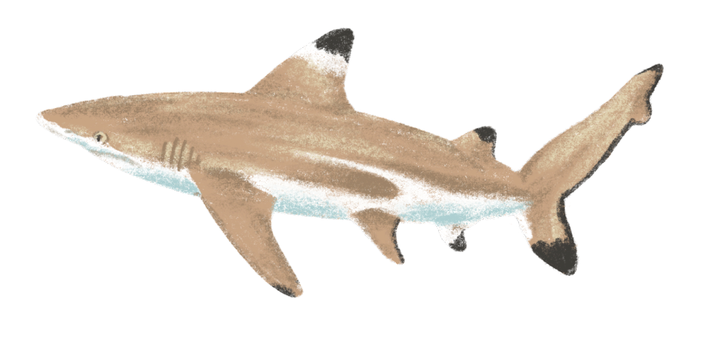
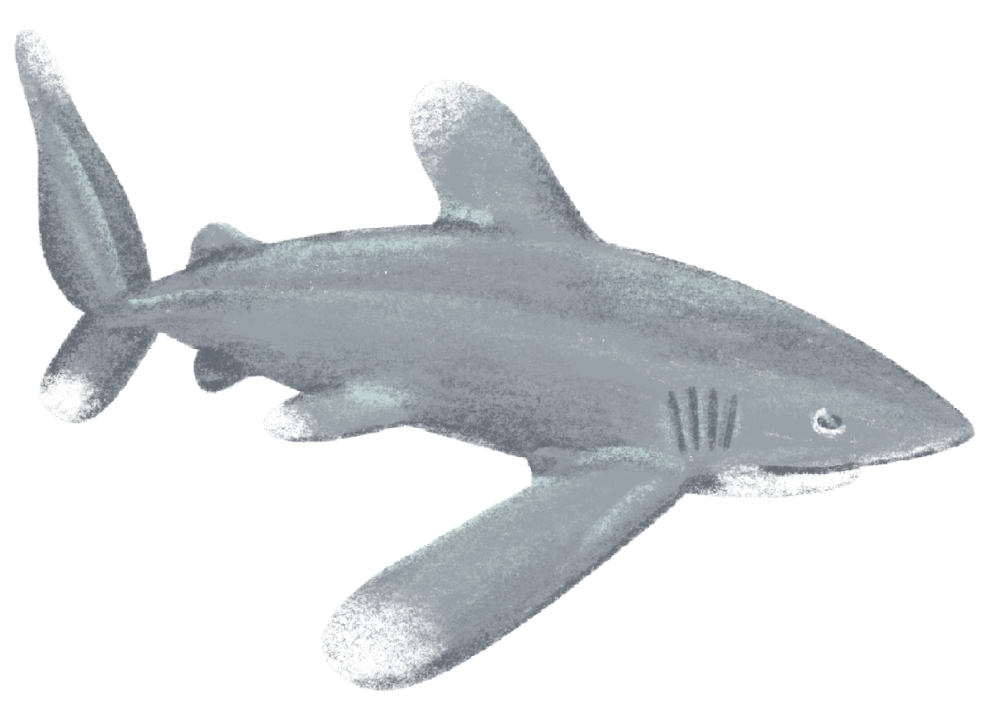
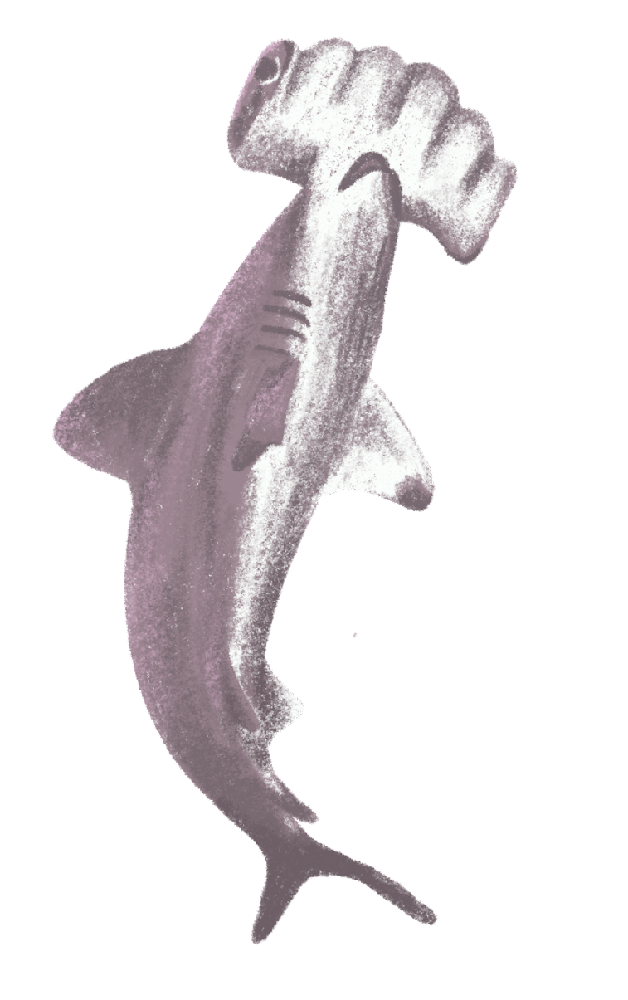
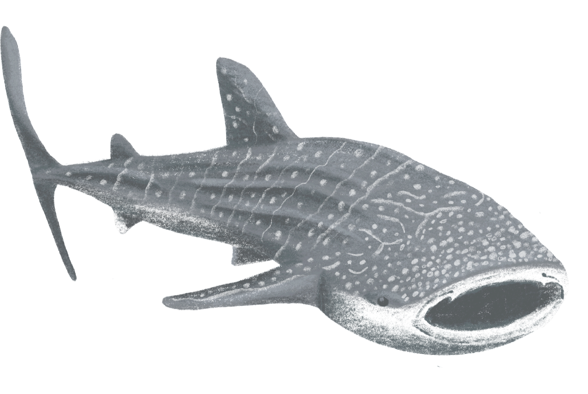
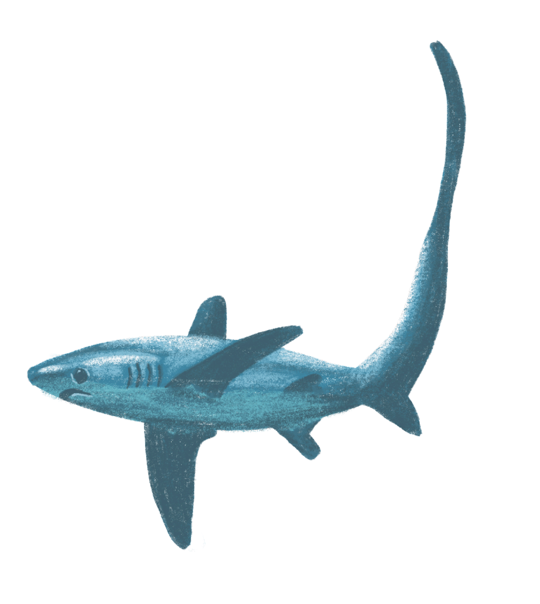
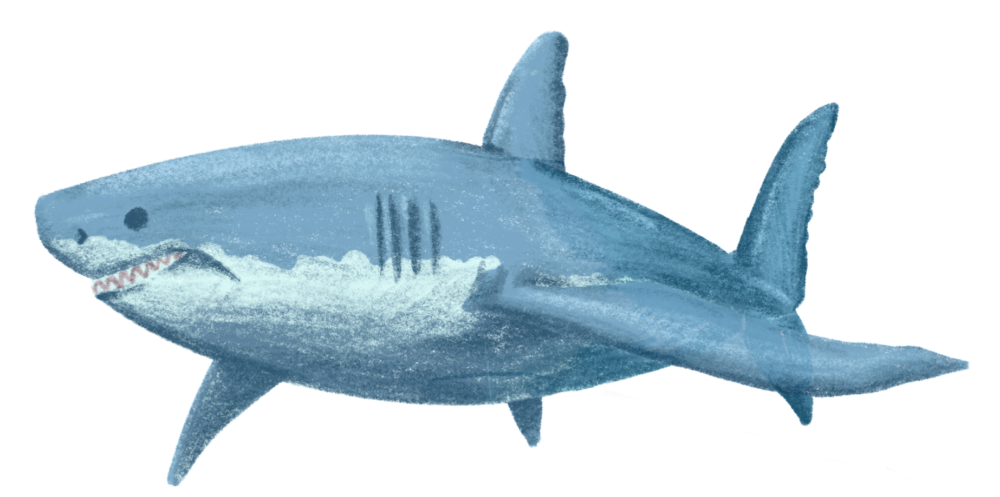
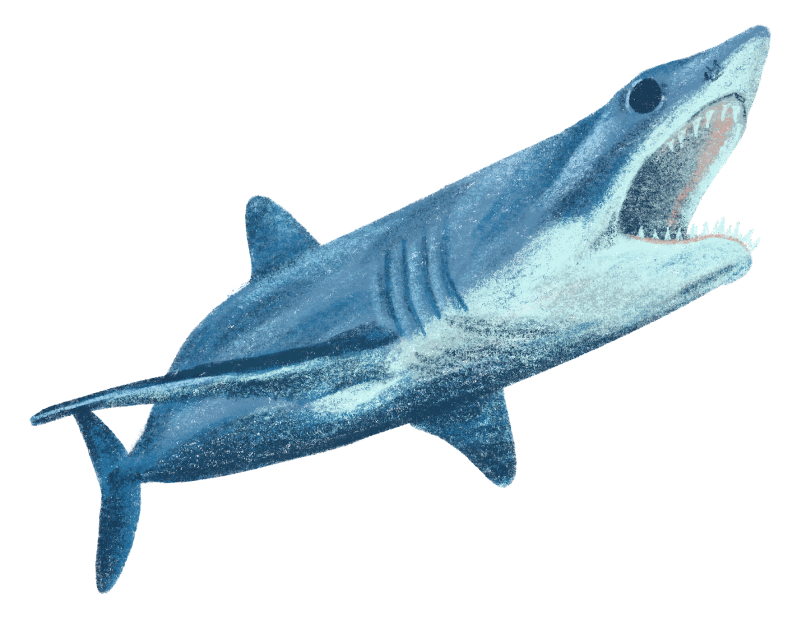

International Shark Awareness Day
July 14th
International Shark Awareness Day is a worldwide day of celebration for the greatest fish on earth!
Sharks have been around for 450 million years and today, there are a huge variety of sharks around the globe. Unfortunately,
the fear and stigma surrounding sharks in pop culture means that sharks are often overlooked in conversation efforts. Shark
populations have declined 90% in the past 50 years, and we need to band together in order to let these wonderful animals
survive to future generations. On Shark Awareness Day, we cultivate respect and admiration for sharks and champion conservation efforts.
Return to Doodle
Featured Shark Types
|  |
Blacktip Shark
- Blacktip sharks frequent bays, coral reefs, and other shallow waters -- including the waters around Cape Cod and Massachusetts!
- Blacktip sharks are often seen leaping out of the water while hunting fish!
|
|  |
Whitetip Shark
- Whitetip Sharks live communally in small home ranges and are slow swimmers.
- Whitetip Sharks are called "sea dogs" because of their playful, curious behaviour!
|
|  |
Hammerhead Shark
- Hammerhead Sharks weird head shape is called a cephalofoil.
- Hammerhead Sharks have disproportionately small mouths!
|
|  |
Whale Shark
- Whale Sharks can grow up to 12 meters long and are called the "gentle giants" of the ocean.
- Whale Sharks can migrate thousands of miles and grow to be 150 years old!
|
|  |
Thesher Shark
- Thesher Sharks tail fins can be as long as 10 feet!
- Thesher Sharks are one of the few warm-blooded shark species!
|
|  |
Great White Shark
- Great White Sharks are the largest predatory fish on the planet!
- Great White Sharks can smell prey from 2 miles away!
|
|  |
Mako Shark
- Mako Sharks swim extremely fast and are sometimes called the "Peregrine Falcons" of the ocean!
- Mako Sharks can jump very high and have been known to jump into fishing boats!
|